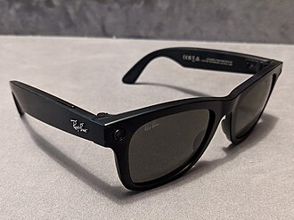

Descubre la nueva colección de lentes de Ray-Ban, diseñada para quienes buscan un equilibrio perfecto entre estilo y comodidad. Estos nuevos modelos incorporan materiales más ligeros, mayor resistencia y lentes con protección UV avanzada, ofreciendo una experiencia visual más cómoda para el uso diario.
La innovación llega con los nuevos lentes inteligentes desarrollados por Meta Platforms en colaboración con Ray-Ban. Los Ray-Ban Meta Smart Glasses permiten capturar fotos, grabar videos y escuchar audio directamente desde las gafas, combinando moda y tecnología en un solo dispositivo.
Este año destacan los diseños clásicos reinventados, con monturas elegantes y colores modernos. Los lentes continúan evolucionando como un accesorio esencial que no solo protege la vista, sino que también refleja personalidad y estilo.
Aprovecha nuestras promociones de temporada y obtén lentes con la calidad característica de Ray-Ban a precios especiales. Es el momento ideal para renovar tu estilo con modelos modernos y funcionales.